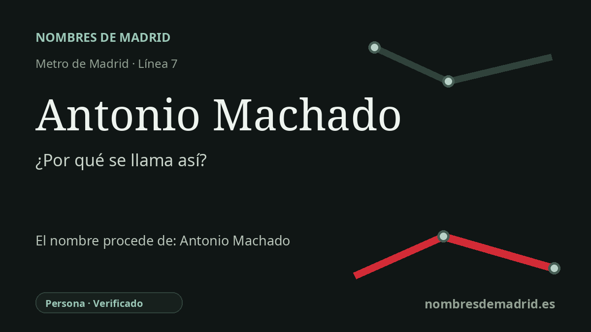

Publicado el · Investigación de Nombres de Madrid · Cómo verificamos cada origen · 7 fuentes consultadas
Respuesta rápida
La estación de Antonio Machado toma su nombre de la calle cercana dedicada a Antonio Machado Ruiz, poeta español de la Generación del 98. Inaugurada en la línea 7 el 29 de marzo de 1999, da servicio a Valdezarza y Peñagrande en un entorno marcado por nombres literarios.
La historia del nombre
La estación de Metro **Antonio Machado** toma su nombre de una denominación conmemorativa ya presente en su entorno: la calle de Antonio Machado, próxima a los accesos situados en la calle de Valderrodrigo. No se trata de un antiguo nombre del paisaje ni de una aldea desaparecida, sino de un homenaje público al poeta Antonio Machado Ruiz.
Machado nació en Sevilla en 1875 y murió en Collioure, Francia, el 22 de febrero de 1939. Las fuentes de referencia lo describen como escritor y poeta español, miembro tardío y muy representativo de la Generación del 98, con una primera obra vinculada al Modernismo y una poesía posterior profundamente marcada por Castilla, la memoria, el tiempo y el paisaje moral de España.
La estación se abrió al público el **29 de marzo de 1999**, cuando la línea 7 se prolongó desde Valdezarza hacia Pitis. Las crónicas e informaciones institucionales de aquella ampliación incluyen Antonio Machado entre las nuevas estaciones que daban servicio al noroeste de Madrid, especialmente a Valdezarza, Peñagrande y colonias residenciales próximas.
El contexto urbano refuerza la interpretación del nombre. El catálogo municipal de patrimonio de Madrid sitúa en la llamada **Ciudad de los Poetas** un monumento a Antonio Machado inaugurado en 1985, frente a la calle Antonio Machado. Ese monumento, con una cabeza realizada por Pablo Serrano, muestra que el nombre del poeta ya era un hito cívico visible antes de la llegada del Metro.
La etimología es, por tanto, segura, aunque no se ha localizado en las fuentes digitales consultadas el acuerdo administrativo concreto que eligió el nombre de la estación. La formulación pública más prudente es que la estación lleva el nombre de Antonio Machado a través de la calle cercana y del paisaje conmemorativo del barrio, y que lo usa desde su apertura en 1999.